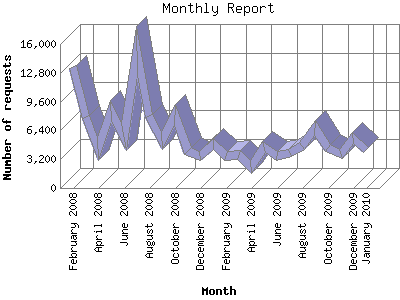

The Monthly Report identifies activity for each month in the report
time frame. Remember that each page hit can result in several server requests
as the images for each page are loaded.
Note: Depending on the
report time frame, the first and last months may not represent a complete
month's worth of data, resulting in lower hits.

| Month | Number of requests | Number of page requests | |
|---|---|---|---|
| 1. | January 2010 | 4,174 | 1,930 |
| 2. | December 2009 | 5,591 | 2,064 |
| 3. | November 2009 | 3,783 | 1,634 |
| 4. | October 2009 | 4,490 | 2,173 |
| 5. | September 2009 | 6,684 | 2,397 |
| 6. | August 2009 | 4,701 | 1,596 |
| 7. | July 2009 | 3,878 | 1,577 |
| 8. | June 2009 | 3,579 | 1,535 |
| 9. | May 2009 | 4,571 | 1,911 |
| 10. | April 2009 | 2,323 | 929 |
| 11. | March 2009 | 3,692 | 1,464 |
| 12. | February 2009 | 3,501 | 1,482 |
| 13. | January 2009 | 4,862 | 1,878 |
| 14. | December 2008 | 3,506 | 1,483 |
| 15. | November 2008 | 4,135 | 1,768 |
| 16. | October 2008 | 8,153 | 2,740 |
| 17. | September 2008 | 5,251 | 1,760 |
| 18. | August 2008 | 7,955 | 2,480 |
| 19. | July 2008 | 15,198 | 3,928 |
| 20. | June 2008 | 5,697 | 2,109 |
| 21. | May 2008 | 8,575 | 2,538 |
| 22. | April 2008 | 4,283 | 1,571 |
| 23. | March 2008 | 7,891 | 2,845 |
| 24. | February 2008 | 13,490 | 2,470 |
Most active month July 2008 : 3,928 pages sent.
Monthly average: 2,010 pages sent. 5,831 requests handled.
This report was generated on January 24, 2010 01:22.
Report time frame February 10, 2008 00:40 to January 24, 2010 01:20.